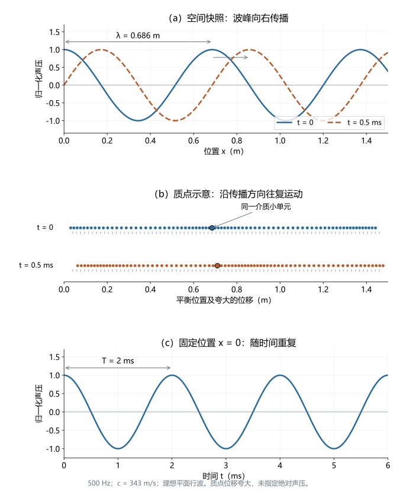
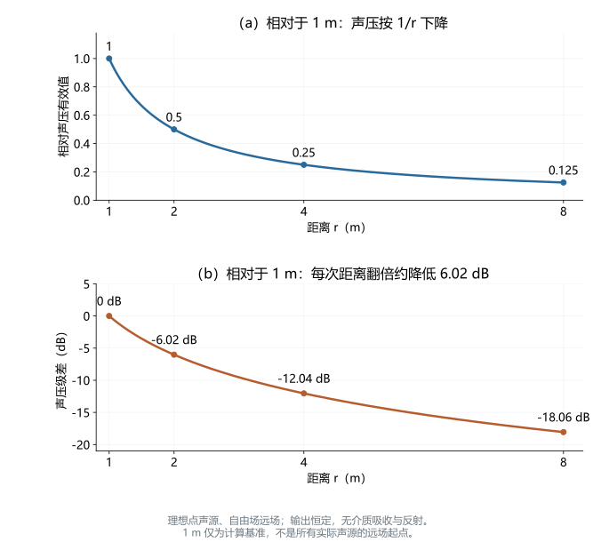
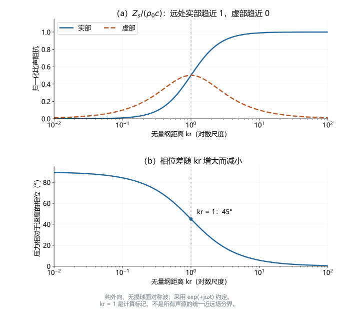
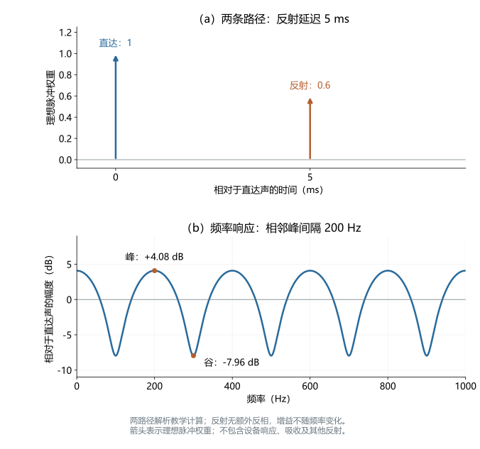

声波与传播
深度词条 · 本地预览 · 2026-10-10 · Draft，尚未完成专业审阅
声波（sound wave）是介质中由振动或其他扰动引起、能够向外传播的机械波；声传播（sound propagation）描述这种扰动怎样从声源到达其他位置。空气中的声波主要表现为压力、密度和质点运动的微小变化，压缩与稀疏区域依次传递，形成纵向压力波。物理上的声波可以存在于听觉范围之外；听见声音则还需要听觉系统对输入作出响应。1
本词条以静止空气中的小振幅声波为主，连接时空结构、波方程与声阻抗，再说明距离、边界和环境怎样改变接收点的声音。它为声压级与分贝、基频、双耳时间差和室内声学提供物理基础。这里的波形和传播计算描述声学输入，不能直接当作响度、音高或言语识别结果。
在实际测量中，记录由声源、传播路径与接收设备共同决定。同一扬声器输出经过不同距离、反射或遮挡，可以产生不同波形与频谱。本文进一步展开近远场、测量控制和单反射算例，帮助读者判断理想规律可以解释哪些结果，以及哪些变化需要补充模型或实验。917
声音怎样在介质中传递
质点在振动，扰动在传播
扬声器振膜向前运动时，会压缩邻近空气；向后运动时，邻近空气压力降低。局部压力差推动相邻区域运动，介质的可压缩性与惯性共同使扰动继续传递。在小振幅近似下，空气质点主要在平衡位置附近往复运动，并非从扬声器一路飞到听者耳边。质点运动的方向与波传播方向平行，是空气声称为纵波的原因。12
画成正弦曲线的声波图常使人误以为空气上下摆动。实际上，若纵轴是声压，曲线向上仅表示该位置压力较高，向下表示压力较低；它不是空气质点的运动轨迹。读图首先应检查横轴是时间还是空间位置，以及纵轴记录压力、位移还是电信号。11
声压、质点速度与介质
声压 指总压力相对于环境静压的波动，单位为 Pa；质点速度 指介质受声波驱动的振动速度，单位为 m/s。两者描述不同物理量。声速 则是扰动传播的速度，与某个质点在某一刻的运动速度不同。2
质点位移 的单位为米，质点速度为 。这里的“质点”是连续介质中的小单元，不是追踪单个分子的热运动。负声压表示相对于背景的稀疏，不是负的绝对气压。在小振幅近似中，局部质点速度远小于声速，局部的往复运动与波峰的前进应分别观察。11112
空气、水和固体都可以传声，但它们的弹性、密度与允许的运动形式不同；固体还可支持剪切波。真空缺少传递机械扰动的介质，不能以通常方式传播声波。抽气钟罩里的铃声变弱，是这一点的经典演示；支架和罩体仍可能传声，所以残余录音不等于真空中出现空气声。6
频率、周期、波长与声速
时间重复与空间重复
对于单一频率的周期声，频率 是固定位置每秒完成的振动周期数，单位为 Hz；周期 是完成一次重复的时间，单位为 s。波长 是同一时刻沿传播方向相邻同相位位置的间距，例如两个相邻压缩峰之间的距离，单位为 m。它们满足：3
同一声音可以有两幅不同的曲线：麦克风固定不动，记录 ，得到时间波形；在某一瞬间比较不同位置的 ，得到空间分布。前者的横轴重复间隔是周期，后者是波长。一段录音只有时间轴，不能把相邻波峰的毫秒间隔直接读成米。
对语音等复合声音，通常需要分别讨论不同频率成分的波长。周期性语音的基频对应整体重复率，而谐波各有自己的频率和波长；没有稳定周期的声音也能传播，不需要给整段噪声指定一个唯一波长。
一个向前传播的正弦模型
在均匀、静止、无损介质中，沿正 方向传播的理想平面正弦声波可写为：2
这里 为位置（m）， 为时间（s）， 为峰值声压（Pa）， 为初相位（rad）。同一个波峰到达更远位置，需要多用 的时间。该模型将幅度设为不随距离变化，适合说明平面行波的时空关系；不能同时用它解释点声源向四周扩散时的幅度下降。

图 1 同一声波的空间结构与时间变化。（a）500 Hz、声速 343 m/s 的归一化声压分布；经过 0.5 ms，波峰向右移动 0.1715 m，即四分之一波长。（b）同两时刻的介质质点位置示意，点代表介质小单元，灰线标记其平衡位置，位移为便于观察而夸大，不表示真实分子尺度或声压级。（c）固定在 x = 0 的声压随时间变化，周期为 2 ms。各面板由理想平面行波解析计算，不含扩散、吸收、反射或神经响应。原理见来源 2；可复现参数见生成脚本。
声速由介质及其状态决定
均匀流体中的小振幅声速可表示为 ，其中 是绝热体积模量（Pa）， 是平衡密度（kg/m³）。这说明恢复压力与介质惯性共同决定传播速度；不能只按密度高低判断哪个介质传声更快。3
约 20 °C 的空气中常用 m/s 作教学近似。温度、空气组成与湿度变化会影响声速；风还会改变相对于地面的传播情况。本文算例将这些条件固定，不将 343 m/s 当作所有场景的常数。在通常的均匀空气、线性近似下，提高频率主要使波长变短，并不意味着声音明显传得更快。3
对组成固定、近似理想的气体，可写成 。 为定压与定容热容比（无量纲）， 为摩尔气体常数（J/(mol·K)）， 为绝对温度（K）， 为摩尔质量（kg/mol）；这里用 区别于周期 。声速同时依赖温度与组成，理想气体近似下压力和密度也不是可独立任意改变的两个参数。316
高精度解释还需考虑真实气体效应与分子弛豫，空气声速可有小的频率依赖。把通常空气中的声速近似为与频率无关，对许多入门计算有用；把它写成严格物理定律则超出了近似。湿度、CO₂、静态压力与频率应进入精密测量的环境记录，而不是用更多小数位替代。16
声速测量提供怎样的核对
声学测温利用声速对温度的依赖。NPL 的研究说明强调已知气体分子组成的重要性，并将自由空间声速测量与水蒸气测量结合；一个声速结果本身不能同时唯一确定所有温度、组成和湿度参数。15
Gavioso 等在 2025 年更新湿空气声速模型，用移动传声器的声学波长测量和取样气体的球形声学谐振器相互核对。前者通过空间相位变化测波长，后者通过已知腔体的共振模态推算声速。两种方法在所比较条件下与模型相容，但同一研究中的两套装置仍不同于其他团队的独立重复。16
论文报告近环境条件下模型相对标准不确定度可低至 25 ppm（百万分之二十五）。这不是每次户外测距都能达到的精度。实验比较主要在约 284–301 K、99.5–100 kPa、30%–60% 相对湿度和 400–700 ppm CO₂ 下进行；较宽的模型范围与这组实测范围需分别说明，环境输入、模型与测量装置各有不确定度。16
线性波方程怎样连接压力与运动
惯性与可压缩性
在均匀静止流体中，忽略显著耗散、将微小扰动线性化，动量关系与等熵压缩关系可写成：212
为背景密度（kg/m³）， 为等熵体积模量（Pa）， 为质点速度矢量。压力空间梯度驱动介质加速，速度散度描述局部压缩或膨胀，联立得到：
该波方程忽略黏性与热耗散，把声学压缩近似为等熵；在细管、边界层、明显吸收或高振幅条件下，需加入对应物理项。线性基线的价值在于能清楚连接变量和条件，不能因为一个波形看起来平滑就认定所有线性假设都成立。12
波数、复振幅与叠加
用角频率 （rad/s）与波数 （rad/m），前面的行波可写成 。固定频率上，两位置相差 的传播相位差为 ；实际相位显示常限制在一个 区间，因此只看相位不能知道相隔了多少个整周期。12
本文采用 的复数约定，， 为峰值复振幅，包含振幅和相位。正弦声压有效值为 。改用另一种时间符号约定会改变某些相位与虚部符号，物理预测应一致；峰值和有效值也不能混放在声级与声强公式中。512
线性模型允许各路径的声压相加、质点速度作为矢量相加，因此同频波可以相长或相消。叠加压力不等于把各路径的分贝直接相加。宽带脉冲同样可以传播，正弦解只是分析频率成分的工具，不是声波的一般定义。12
声音为什么随距离变弱
几何扩散不等于能量消失
理想点声源在自由场中向各方向均匀辐射时，远处同样的声功率分布在更大的球面上。若无介质吸收，声强为：4
为声功率（W）， 为平均声强（W/m²）， 为与点声源的距离（m）。距离翻倍，球面面积扩大四倍，局部声强降为四分之一，但穿过整个球面的总功率仍然相同。这是几何扩散，不是声能已经全部转化成热。
单向平面行波中 ，其中 是声压有效值（Pa）。点声源远场可局部近似为平面行波，结合球面扩散可得 。因此两个距离的声压级差为：45
距离翻倍得到约 −6.02 dB。这需要声源输出不变、方向一致，并处于可采用点声源远场模型的自由场；靠近大型扬声器、身处反射明显的房间，或使用线状声源时，不能机械套用。声压级的参考与计算另见声压级与分贝。

图 2 几何扩散怎样改变接收点声压。（a）声压有效值以 1 m 处为基准，按 1/r 下降。（b）对应声压级差，距离每翻倍约降低 6.02 dB。这里假设理想各向同性点声源、自由场远场、输出不变，无空气吸收与边界反射；曲线是解析教学计算，不是房间测量，1 m 也不是所有实际声源的统一远场起点。依据来源 4、5。
吸收与传播路径的其他损失
介质吸收会将部分有序声学能量转化为热，因而在几何扩散之外造成衰减。空气吸收具有频率与环境依赖；界面还会使能量进入其他介质。它们与几何扩散的物理原因不同，不能把一条距离衰减曲线全部归因于空气吸收。8
声阻抗、近场与远场
声压与能流为何需要分别解释
瞬时声强矢量是 ，平均声强为 （W/m²），尖括号表示时间平均。通过包围声源表面的净平均能流积分，可以获得声功率。单点声压、局部声强和整个声源功率是不同测量对象。45
沿单一方向传播的无损平面行波有 ，这是特性比声阻抗，单位 Pa·s/m； 是传播方向质点速度的峰值复振幅。压力与速度同相，才得到前述 。一般比声阻抗可以是复数，平均能流依赖相位；高声压并不保证高净能流。512
球面波的无量纲距离
对球面对称、纯外向的无损波，声压复振幅为 ， 的单位为 Pa·m。在 约定下，径向速度和比声阻抗为：13
是无量纲距离。 时 ，压力与速度关系趋近平面行波； 时反应性成分明显，径向速度的幅度与相位不能用平面波关系直接计算。这涉及局部储能和往复交换，不意味着所有声能都停止向外传播。13
以 500 Hz、343 m/s 为例， 对应约 0.109 m，100 Hz 时约为 0.546 m。这是理想单极子模型的尺度；实际有限声源还涉及尺寸和表面运动，不能用统一米数给全部频率和设备划定远场。点声源、自由场和远场分别描述声源简化、边界条件与局部波的关系，三个术语不能互相替代。1321
一个有助理解的特例是：理想纯外向球面波在近处仍有 ，且由 可推得净径向声强仍等于 。星号为复共轭，1/2 来自峰值复振幅约定。这个结果依赖纯外向球面对称解，不能推广到含反射或多个声源的复杂近场。因此“近场声压必然不按 1/r 衰减”也不是一般结论。13

图 3 球面波怎样趋近平面波关系。（a）Zs/(ρ₀c) 的实部和虚部；（b）压力相对于径向速度的相位。横轴 kr = 2πr/λ 采用对数尺度，kr = 1 为计算标记，未定义通用分界。图为纯外向无损球面对称波的解析计算，采用 ejωt 约定；实际有限声源与反射场可能不同。依据来源 13。
声源尺寸与指向性
大挡板中的圆活塞有助于解释扬声器的方向依赖。半径 与波数 的乘积 比单独的“高频”更有意义：尺寸相对波长很小时，不同方向的辐射差异较小； 增大时，远场辐射更集中，并可能出现旁瓣。因此改变距离时也应固定方位，不能把走到扬声器侧面造成的差异全归于距离衰减。21
这一模型假设特定挡板、活塞运动和远场条件，真实箱体与分频会改变结果。低频方向性较弱不能推出低音扬声器放在房间任何位置效果相同，边界和房间模态仍会参与。821
边界怎样改变传播
反射、透射与干涉
声波遇到墙面或介质界面，会出现反射和透射，实际边界还可能耗散能量。反射强弱与声学阻抗和几何条件有关；“遇到硬表面”并不意味着所有频率都完全反射。直达声与反射声在接收点叠加，同频成分的相位关系可以使局部声压增大或减小。58
对两侧均为无损流体、无限平面界面、垂直入射的平面波，压力反射系数为 ，其中 为两介质的特性比声阻抗。这说明阻抗不匹配为何产生反射；有角度、有限厚度、固体剪切波或复杂吸声结构时需修改模型。5
理想刚性终端处法向质点速度为零，入射与反射声压同号叠加，可形成声压腹部；压力释放边界采用不同声压条件。反射是否反相，需要说明所谈的是压力、速度还是位移，不能把它们的反射符号混用。材料的吸声特性也依赖频率和入射条件。512
相向传播的波在适当条件下形成驻波，声压节点和腹部的位置不同。在房间中移动麦克风，某些频率的记录幅度可能明显改变，因此单点频响不代表整个空间。一个位置声压较小，也不表示声源在所有方向的总辐射都变小。房间反射、模态与混响的进一步解释见室内声学。
无损、等幅的完全驻波中，声压节点与速度节点不重合，沿驻波轴的净平均能流为零，声压幅度却可以很大。实际房间还包含损耗和多方向传播，理想驻波只解释其中一个机制；测到高声压，不能直接当作同等大小的向外净声功率。512
绕射与声影
绕射是波在障碍边缘或开口附近偏离简单直线传播图景的现象。判断其影响，需要比较波长与障碍或开口尺度：对同一障碍，较长波长通常更容易绕到几何遮挡区；较短波长则更容易形成明显声影。7
这为双耳声级差中的频率依赖头影提供物理背景。不过，真实头部、耳廓与躯干的影响需要完整声场和个体几何，不能仅由“波长大于头宽”计算出一个确定的耳间声级差。声影也不是绝对静音区，反射和其他传播路径仍可能带来声音。
空气吸收与非均匀环境
若以 表示固定环境下每米的声级吸收损失（dB/m），几何扩散与均匀介质吸收可合写为：
这个简化表达不包含反射、方向改变或折射，也不是完整户外标准算法。吸收系数随频率、温度、湿度和压力变化。ISO 9613-1 的官方摘要说明了这一计算主题和变量；本文未执行其完整付费标准公式。820
Goerlitz 在 2018 年结合天气记录与传播计算，展示高频蝙蝠声记录如何受到环境影响。温湿度作用可以是非线性的，不能说湿度增加必然使所有频率的衰减单调增加或减小。该研究主要分析 10–110 kHz，超声吸收值不能直接作为人类可听频段常数；其中阵列定位误差分析是合成信号模拟。17
户外还存在地面与气象效应。地面反射与直达声叠加，声源、接收点高度及地面阻抗影响干涉；温度和风速的高度梯度使有效传播速度不均匀，声线可能向上或向下弯曲。顺风、逆风差异往往涉及梯度，不能仅给全部路径加减同一个风速。长距离研究需记录气象与地形，采用包含相应机制的模型。14
两个计算例子：距离变化与单次反射
同一声源，两个自由场距离
设理想声源在均匀空气中播放 500 Hz 纯音，采用 m/s，且 1 m 与 2 m 的接收点都满足自由场远场条件。假设沿同一方向在 1 m 处测得 60 dB SPL，忽略空气吸收和边界反射。以下数值是教学设定及公式计算，不是实测听觉结果。
| 量 | 1 m 接收点 | 2 m 接收点 | 所说明的关系 |
|---|---|---|---|
| 频率 | 500 Hz | 500 Hz | 静止声源与接收点，传播不改变这个频率 |
| 周期 | 2 ms | 2 ms | T = 1/f |
| 波长 | 0.686 m | 0.686 m | λ = c/f，介质条件相同 |
| 从声源传播的时间 | 约 2.92 ms | 约 5.83 ms | t = r/c |
| 声压级 | 60 dB SPL | 约 53.98 dB SPL | 距离翻倍，约降低 6.02 dB |
两接收点相差约 2.92 ms，声压有效值比为 1/2，声强比为 1/4。距离变化主要带来延迟与幅度变化，而不是把 500 Hz 变成 250 Hz。对于这段稳定纯音，到达差超过一个周期，仅凭某一时刻的相位不能唯一确定相差多少个完整周期；起始事件或宽带信号可提供额外时间信息。这与双耳时间差解释中的周期歧义相连，但这里的两点是教学测量位置，并非两只耳朵。
再把声源频率改为 4000 Hz，在相同声速下波长变为约 0.0858 m，周期变为 0.25 ms；两距离的直达传播时间仍不变。不同频率面对同一障碍，波长相对尺寸却不同，因此边界引起的接收差异可能不同。
增加一条反射，延迟怎样变成频谱起伏
把接收路径相对于直达声归一化，设直达增益为 1，单次反射增益 ，相对延迟 ms。反射无额外反相且增益不随频率改变时，简化脉冲响应与频率响应为：
是理想单位脉冲， 无量纲， 以秒计， 为相对于直达路径的无量纲传递函数。343 m/s 下，5 ms 对应路径长度差 1.715 m。这连接镜像声源模型中带增益与延迟的离散路径原理，是本文教学简化，不是房间实测拟合。19
相长峰间隔为 Hz，相消谷位于 100、300、500 Hz 等奇数半间隔处。峰幅度 1.6，对应约 +4.08 dB；谷幅度 0.4，对应约 −7.96 dB，均相对于单独直达声。反射小于直达分量，谷不会降为零。时域的路径差形成频域梳状起伏，移动接收点改变路径差，谷的位置也随之移动。

图 4 一条反射怎样改变频谱。（a）相对于直达声的两个理想路径脉冲，增益为 1 与 0.6，相对延迟 5 ms。（b）20 log₁₀|H(f)|，相邻峰间隔 200 Hz，峰与谷约为 +4.08 和 −7.96 dB。图为两路径解析计算；箭头表示脉冲及权重，没有实测峰宽或采样脉冲高度的含义。假设反射相位和增益不随频率改变，忽略其他反射、设备响应与吸收，不是完整房间仿真。依据来源 19。
真实边界存在频率依赖、复杂反射相位和多条路径，脉冲还受测量带宽影响。看到一个频响谷时，应查看空间移动、到达结构和设备响应，再判断它主要来自传播干涉还是声源本身。只看语谱图颜色变化，不能唯一确定产生机制。919
怎样观察和测量传播
从输入、位置与时序开始
测量设计先确定对象：距离衰减观察固定输出下的校准声压，声速测量观察距离与传播时间或波长，路径响应则观察输入到接收点的传递。不同对象需要不同控制；单点频响不能自动给出声源总功率，单个声速也不能同时确定全部环境参数。5915
| 研究目标 | 输入与观测 | 主要控制 | 解释限制 |
|---|---|---|---|
| 距离衰减 | 固定刺激、多距离校准声压 | 输出、方位、背景噪声、反射 | 偏离 −6 dB/翻倍可有多种原因 |
| 直达到达差 | 脉冲、宽带声或扫频，同步记录 | 时钟、通道延迟、几何路径 | 最大峰可能来自反射 |
| 相位法声速 | 固定频率，位移与相位斜率 | 位移精度、相位展开、环境 | 有周期歧义，反射扰动相位 |
| 脉冲响应 | 已知宽带激励、反卷积响应 | 输入谱、设备线性、近似时不变 | 通常包含扬声器与接收链 |
| 局部声强 | 压力与速度或空间梯度信息 | 相位校准、探头几何、方向 | 需解释反应性成分 |
验证距离规律时，可保持扬声器输出与朝向不变，沿同一方向移动已校准的传声器，记录距离、频率、声压级及测量环境。若目标是直达声，应检查反射是否进入分析时窗；测量窗口过短又会限制低频分析。实际器材的尺寸、指向性与背景噪声，都可能使结果偏离理想点声源模型。489
测到达时间可比较两个同步传声器的波形，或使用有明确时间参考的脉冲、扫频及相关分析。若把播放命令到录音峰值的全部时间都当作声传播时间，声卡缓冲与设备延迟会混入结果。研究中应分清声学路径、设备延迟和反射到达，不把算法找到的最大峰自动认作最早直达声。910
一个可理解的流程是固定声源，在至少两个距离重复记录，保存刺激、原始波形、距离参考点、环境和分析频带。先检查响应时序，再选取直达声时窗；缩窗可减少后续反射，却减少低频周期，延长窗口则纳入更多房间响应。零填充仅加密频谱显示点，不能补回有效观测时长。9
稳定纯音的相关函数具有周期峰，不能唯一定位全部延迟。宽带声、起始事件与几何允许范围可帮助判断候选到达，仍需报告采用起点、最大峰还是算法估计。固定频率的近似单向波还可拟合空间相位斜率，由 估计声速，斜率单位 rad/m；相位展开需要足够密的空间采样或其他先验。2025 年波长研究使用精密位移与环境测量，仅用尺子和软件相位显示不能声称达到同等不确定度。91216
扫频怎样获得脉冲响应
在线性、近似时不变条件下，接收信号为 ； 为已知输入， 为系统脉冲响应， 为噪声，星号在这里表示卷积。已知激励与合适的反卷积可以估计响应。除空气路径外，结果还可能包含扬声器、传声器和接口；研究路径本身时需校准或明确保留这些环节。918
Farina 的 2000 年 AES 会议预印稿用指数扫频与反卷积，使线性响应与不同阶谐波响应在时间上分开，有助于识别失真混入。仍需合适激励长度、响应分离和近似稳定条件，不能把方法当作任意非线性或时变系统的无误差逆解。其会议预印稿状态应与同行评审期刊论文区别记录。18
距离与计时精度共同限制声速估计
简单传播时间法采用 。若距离和计时的标准不确定度 （m）与 （s）相互独立且足够小，比值的一阶误差传播给出：
为声速的标准不确定度（m/s）。这里以 避免与质点速度 混淆；若两量相关，还需协方差项。这是本文对比值的一阶教学推导，不是设备精度认证。
例如，1 m 路径按 343 m/s 对应约 2.92 ms；1 mm 的距离标准不确定度相当于 0.1%，10 μs 的计时标准不确定度约为 0.34%，合成约 0.36%。未校准通道延迟和反射造成的系统偏差尚未包括在内。延长路径可减小相同绝对计时误差的相对影响，却可能增加空间温度不均匀、反射和吸收；方法选择需围绕完整误差预算。1016
声压测量与能流判断
普通传声器主要测局部声压。一般声场中的瞬时声强是声压与质点速度的乘积，平均声强还取决于两者的相位关系；近场或驻波条件下，仅用声压平方不能无条件推出净能流。5
记录波形后，可用语谱图观察传播前后的谱结构与时间变化；数字幅度须经校准才能解释为绝对声压。若研究目标是听者感知，还需另外测量响度、音高或言语可懂度。声学输入变化和行为变化属于不同层级，不能仅由距离或图像直接推出听觉获益。
在听觉研究中怎样选择传播模型
传播模型帮助规定实际呈现给耳朵的输入。声场实验需固定扬声器与头部位置并检查耳位声压；双耳实验还涉及不同耳位的路径与头部遮挡。距离造成的整体延迟与左右耳到达差不同，房间频谱变化也与单独头影不同，应结合双耳听觉与空间听觉分层解释。
模型选择取决于研究要保留哪些物理过程。平面波适合解释局部相位与压力—速度关系，点声源解释理想扩散，镜像声源表达规则边界的反射路径；复杂绕射、模态和边界需更完整的求解。增加复杂度应针对缺失机制，并检查输入参数和验证数据。121319
| 模型 | 能直接解释什么 | 不能自动覆盖什么 |
|---|---|---|
| 单向平面行波 | 时空相位、局部阻抗 | 有限声源的扩散与多路径 |
| 球面点声源 | 1/r 声压、近远场阻抗尺度 | 大声源表面结构和实际指向性 |
| 离散路径／镜像声源 | 到达序列、路径干涉与卷积 | 任意障碍绕射和复杂边界 |
| 环境传播修正 | 模型包含的吸收、地面或气象效应 | 未被纳入的空间变化与边界细节 |
耳机、耳道及助听设备声路还包含受限空间和耦合条件，自由场距离公式不能直接套用。对感知目标，声压变化、神经响应与行为获益需要各自的测量证据，传播计算首先规定了声学输入。
证据进展与仍需解决的问题
线性基础可由不同教材与课程交叉核对，教学数值可在明确条件下重算。不同材料承担不同证据任务：讲义解释模型，官方软件文档解释实现与时间参考，原始计量研究提供装置比较与不确定度，环境研究分析变化条件下的记录偏差。同一教材的多个章节不构成多个独立实验。2121617
2025 年湿空气声速工作细化了入门模型忽略的因素，并不否定 343 m/s 对普通算例的实用性。研究者应根据目标误差决定是否加入色散与真实气体修正，区分模型范围、实验覆盖和装置不确定度，避免把某一实验的精度直接推广到所有聆听环境。16
实际研究仍需要从声源、路径、设备和位置的混合作用中分辨机制：多点测量检验单点频响谷是否稳定，时序检查直达与反射，环境记录检验声速变化，不同激励电平检查设备线性。这些问题可通过控制实验逐步回答，单个分贝数或一次响应不足以替代。9101718
本文结合经典基础与截至 2026-10-10 检索到的直接相关资料，所用近期原始研究发表于 2025 年。各引用登记实际访问范围，尚未访问的付费全文不作为已读材料，也不宣称完成全部声传播文献的系统综述。后续可围绕复杂边界、空间非均匀条件下的模型检验，以及传播变化怎样影响具体听觉任务继续扩展。
参考文献与证据范围
[1] William Moebs; Samuel J. Ling; Jeff Sanny (2016). University Physics Volume 1 — 17.1 Sound Waves. OpenStax / Rice University。访问范围：fulltext。核对公开章节的声压扰动、纵波、质点平衡位置附近振动与正弦声波表述；用于基本定义，不转载教材图。
[2] Joe Wolfe / UNSW School of Physics (未标注出版年（2026-10-10 核验）). Physclips — The wave equation for sound. UNSW Physclips。访问范围：fulltext。核对小振幅近似、声压与质点运动、波动方程及行波解；正文采用独立符号约定，教学图另行解析计算。
[3] William Moebs; Samuel J. Ling; Jeff Sanny (2016). University Physics Volume 1 — 17.2 Speed of Sound. OpenStax / Rice University。访问范围：fulltext。核对 c=fλ、流体中声速与体积模量及密度的关系、空气温度关系和约 20 °C 时 343 m/s；不把近似值当作全部环境的常数。
[4] William Moebs; Samuel J. Ling; Jeff Sanny (2016). University Physics Volume 1 — 17.3 Sound Intensity. OpenStax / Rice University。访问范围：fulltext。核对声功率、声强、无损球面扩散的平方反比关系；声级差与距离表为正文在明确假设下的独立推导。
[5] Joe Wolfe / UNSW School of Physics (未标注出版年（2026-10-10 核验）). Physclips — Acoustic impedance, intensity and power. UNSW Physclips。访问范围：fulltext。核对比声阻抗、单向平面行波的 ρc、声压与质点速度的乘积及均方根声压和声强关系；不据局部声压无条件估计复杂声场净能流。
[6] Joe Wolfe / UNSW School of Physics (未标注出版年（2026-10-10 核验）). Physclips — Sound waves in air. UNSW Physclips。访问范围：fulltext。核对空气作为传播介质、抽气实验及声音绕过障碍的定性说明；不采用页面光学波长笔误，不转载演示素材。
[7] Joe Wolfe / UNSW School of Physics (未标注出版年（2026-10-10 核验）). Physclips — Diffraction, shadows, beams, Huygens’ construction. UNSW Physclips。访问范围：fulltext。核对波长相对障碍或开口尺度对绕射和声影的影响；用于定性解释，不从该演示推算头影或屏障的具体衰减量。
[8] Joe Wolfe / UNSW School of Physics (未标注出版年（2026-10-10 核验）). Acoustics FAQ — General questions in acoustics. UNSW Music Acoustics。访问范围：fulltext。核对墙面反射、混响、空气吸收与干涉的相关问答；不引用其示例吸收率作为通用环境数值，不采用其他问答中的近似听觉数值。
[9] Room EQ Wizard (官方文档（2026-10-10 核验）). Room EQ Wizard Help — Impulse Responses. Room EQ Wizard 官方帮助。访问范围：documentation。核对扫频测量、直达与反射到达、有限带宽和响应时窗对频率分辨能力的影响；未运行 REW，不采用默认参数为通用实验推荐。
[10] Room EQ Wizard (官方文档（2026-10-10 核验）). Room EQ Wizard Help — Making Measurements. Room EQ Wizard 官方帮助。访问范围：documentation。核对回环和声学时间参考、系统延迟、响应起点与峰值的差别；用于时序测量边界，不将设备报告的延迟全部解释为声传播时间。
[11] Daniel A. Russell (1998（页面更新至 2025）). Wave Motion in Mechanical Medium. Pennsylvania State University, Graduate Program in Acoustics。访问范围：fulltext。阅读纵波与横波相关文字，交叉核对质点位移方向、平衡位置附近往复运动与波形传播的区别；未转载或改编原动画。
[12] MIT 6.551J / HST.714J 课程（讲义未单独署名） (2004). 6.551J / HST.714J, Lecture 2: One-Dimensional Traveling Waves. MIT OpenCourseWare。访问范围：fulltext。阅读讲义第 1–2、5–9、11–13 页：线性无损假设、压强与速度方程、双向行波、阻抗及边界反射；独立采用 e^{jωt} 符号约定，不转载讲义图。
[13] MIT 6.551J / HST.714J 课程（讲义未单独署名） (2004). 6.551J / HST.714J, Lecture 3: Spherical Waves: Near & Far Field, Radiation Impedance, and Simple Sources. MIT OpenCourseWare。访问范围：fulltext。阅读第 1–5 页，核对球面对称外向波 P=Ae^{-jkr}/r、质点速度、复数比声阻抗及 kr 的近远场条件；不把单极子模型边界当作全部声源的统一判据。
[14] Kurt Heutschi (2021（所访问文件名含 2024）). Lecture Notes on Acoustics I. ETH Zürich, Institute for Signal and Information Processing。访问范围：fulltext。按封面 2021-09-14 登记年份；阅读第 5 章地面效应与气象传播相关段落，核对温度梯度、风速梯度导致的声线弯曲及地面反射条件。未声称通读 158 页讲义。
[15] National Physical Laboratory (NPL) (未标注出版年（2026-10-10 核验）). Primary thermometry — Acoustic thermometry. 英国国家物理实验室官方研究说明。访问范围：fulltext。阅读 Acoustic thermometry 小节，核对利用已知分子组成气体的声速测量温度，以及结合水蒸气测量解释空气温湿度；不将声学测温概括成无需任何输入条件。
[16] R. M. Gavioso; M. Astrua; M. Zucco; M. Pisani (2025). Speed of sound in humid air: Accurate thermodynamic model and experimental validation. Journal of Physical and Chemical Reference Data, 54(4), 043101。访问范围：fulltext。阅读机构公开 PDF 的摘要、第 1 与 2.1 节，以及出版社检索可读的结论和软件说明相关文本；由引言核对两种测量方法与实验范围，核对环境和频率依赖及近环境条件下低至 25 ppm 的模型相对标准不确定度。未逐项审计完整误差预算，未运行 LabVIEW 程序或复现数据。
[17] Holger R. Goerlitz (2018). Weather conditions determine attenuation and speed of sound: Environmental limitations for monitoring and analyzing bat echolocation. Ecology and Evolution, 8(10), 5090–5100。访问范围：fulltext。阅读摘要、引言、方法及相关结果段落，核对天气数据与传播计算的结合、频率和温湿度对吸收的非线性影响，以及声速设置误差对阵列定位的模拟。该文主要分析 10–110 kHz 蝙蝠声，不将超声吸收数值当作人类可听声常数。
[18] Angelo Farina (2000). Simultaneous Measurement of Impulse Response and Distortion with a Swept-Sine Technique. 108th AES Convention, Paper 5093（会议预印稿）。访问范围：fulltext。阅读摘要及第 1–2 节和指数扫频反卷积相关段落，核对线性传递函数、近似时不变要求和谐波响应的时间分离；AES 封面注明未经过 Review Board 审查，不标作同行评审期刊论文，不据此断言测量消除所有失真。
[19] Jont B. Allen; David A. Berkley (1979). Image method for efficiently simulating small-room acoustics. The Journal of the Acoustical Society of America, 65(4), 943–950。访问范围：fulltext。阅读作者高校公开 PDF 在检索服务中可读的摘要、引言和第 I 节开头，核对矩形房间镜像声源、增益延迟脉冲和卷积用途；直接下载返回 403，未通读全部 8 页。文件名中的 97 不是出版年；正文只作单反射教学简化，不声称复现完整 FORTRAN 求解。
[20] International Organization for Standardization (ISO) (1993（官方目录显示 2026 年复审确认）). ISO 9613-1:1993 — Acoustics: Attenuation of sound during propagation outdoors, Part 1: Calculation of the absorption of sound by the atmosphere. ISO 国际标准，第一版。访问范围：abstract。仅阅读 ISO 官方摘要、范围与版本信息，核对大气吸收计算涉及频率、温度、湿度和压力。未访问完整付费标准，不声称执行标准公式或通过标准符合性验证。
[21] Daniel A. Russell (2002（页面更新至 2014）). Radiation from a Circular Baffled Piston. Pennsylvania State University, Graduate Program in Acoustics。访问范围：fulltext。阅读低、中、高 ka 情形，核对圆活塞远场指向性对尺寸和波长的依赖；不采用页面关于低音扬声器放置的过度概括，不转载动画或实测方向图。